ALGUNOS DE MIS TRABAJOS
MAÑANA - MUSEO DEL DESPUES
Diseño de identidad
Diseño editorial
Mañana - Micromuseo del después, proyecto realizado en 2026 para Taller de Diseño III. El trabajo consistía en crear por completo un museo ficticio, desarrollando así su logo e identidad, piezas editoriales, señalética, merch, cartelería, entre otras cosas. Mañana, es un museo que vive en el futuro, nada de lo que ocurre se toma como un hoy.
VER EN BEHANCE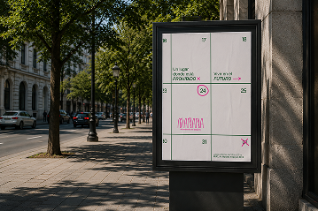
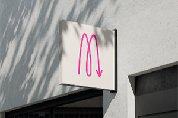
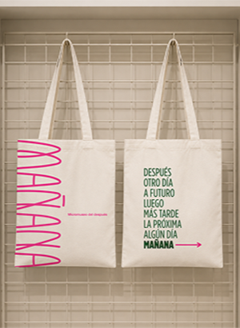
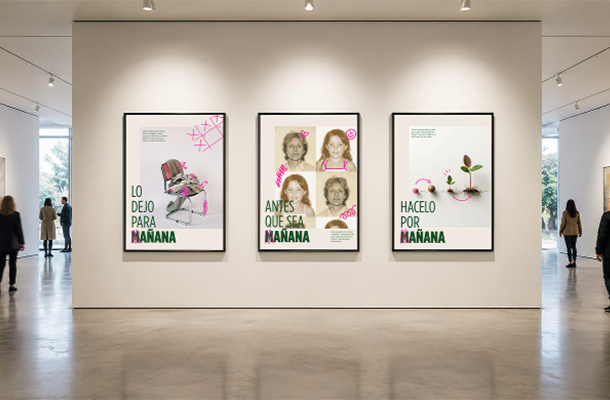
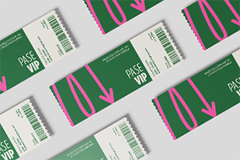
EXLIBRIS
Diseño de identidad
Diseño editorial
Exlibris, es un proyecto desarrollado en 2026 para Taller de Diseño III. Consistía en crear un exlibris que en mi caso, terminó desarrollándose como marca personal. Mediante un pequeño fanzine, se explica el proceso y la fundamentación del mismo.
VER EN BEHANCE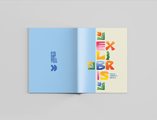
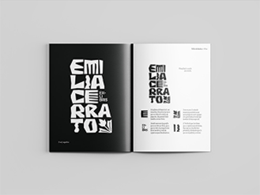
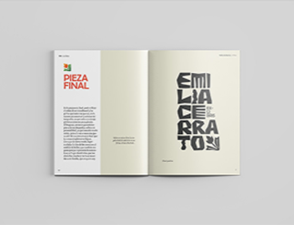
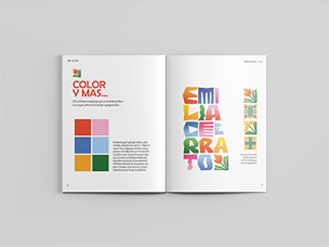
UN VUELO AL FIN DEL MUNDO
Diseño editorial
Un vuelo al fin del mundo, es un trabajo realizado en 2024 para la materia Espacio Tipográfico II. Es un libro sobre el avistaje de aves realizado en un viaje a Ushuaia. Cuenta con texto narrativo y también fichas técnicas de cada ave. También decidí hacer las ilustraciones para hacer el trabajo aún más personal y cercano.
VER EN BEHANCE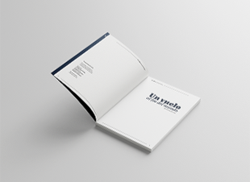
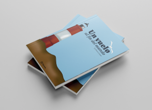
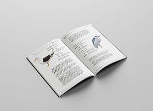
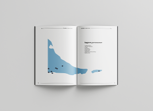
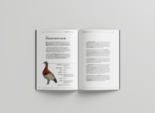
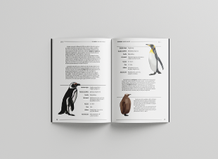